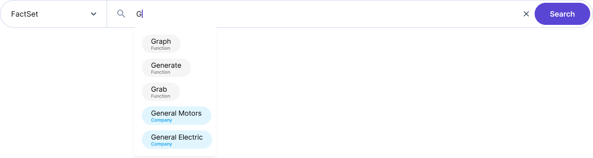

Search your data
Run all your data querying, visualization, and analysis through our natural language interface – as if you’re talking to a real data scientist.


Run all your data querying, visualization, and analysis through our natural language interface – as if you’re talking to a real data scientist.
Integrate metrics from all your data
sources into the same analyses with the
click of a button.

Market data
Fundamentals data
Estimates data
Price & volume data
Volatility / skew data
On-chain analytics data
Currency data
Commodities data
Global economy data
Sentiment data
Developer data
Consumer data

Employment data
Web traffic data
Flight data

Harness the power of data science and
uncover relationships faster and easier
than ever before.
Build charts and graphs by simply telling Rogo
what you want to see. Conduct quick, easy,
effective, and actionable exploratory data
analysis with no headache.

Easily verify data fidelity and seamlessly integrate your analysis on Rogo into your existing data workflow using our export options.
We are engineering and product leaders with first-hand analytics experience across
financial services verticals.
Our leadership team has over 50 years of combined experience creating cutting edge
software and data science solutions.